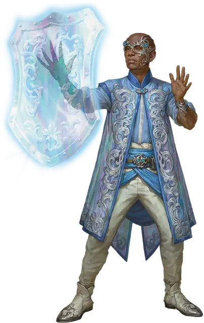

Кузнец материи Ока разума
Mind’s Eye Matter Smith
Маленький или Средний Гуманоид

Класс Доспеха 12 (15 с доспехом мага)
Хиты 78 (12к8 + 24)
Скорость 30 футов
| мод | спас | ||
|---|---|---|---|
| СИЛ | 10 | +0 | +0 |
| ЛОВ | 14 | +2 | +2 |
| ТЕЛ | 14 | +2 | +2 |
| мод | спас | ||
|---|---|---|---|
| ИНТ | 14 | +2 | +4 |
| МДР | 14 | +2 | +2 |
| ХАР | 16 | +3 | +5 |
Навыки Восприятие +6, Расследование +4
Чувства пассивное Восприятие 16
Языки Общий плюс два языка
Опасность 4 (1100 опыта)
Бонус мастерства +2
Действия
Мультиатака. Кузнец материи совершает две атаки Проявлением силы.
Проявление силы. . Рукопашная или Дальнобойная атака заклинанием: +5 к попаданию, досягаемость 5 футов или дистанция 120 футов, одна цель. Попадание: 10 (2к6 + 3) урона силовым полем.
Использование заклинаний. Кузнец материи накладывает одно из следующих заклинаний, не нуждаясь в материальных компонентах, используя Харизму в качестве базовой характеристики:
• Неограниченно: доспехи мага [mage armor], волшебная рука [mage hand], фокусы [prestidigitation]
• 1/день каждое: сотворение пищи и воды [create food and water], изготовление [fabricate] (действием)
Бонусные действия
Планарная ковка. Кузнец материи магически манипулирует энергией плана существования, на котором он находится, чтобы создать один из следующих эффектов (выберите один или бросьте к4):
• 1-2: Цепи. Кузнец материи создает спектральные оковы вокруг существа, которое он может видеть в пределах 30 футов. Цель должна преуспеть в спасброске Ловкости Сл 13, иначе будет опутанным до конца своего следующего хода.
• 3-4: Магический щит. Кузнец материи призывает парящий спектральный щит, дающий кузнецу материи бонус +5 к его КД до тех пор, пока щит не исчезнет в начале следующего хода кузнеца материи. В первый раз, когда существо промахивается броском рукопашной атаки против кузнеца материи, пока существует щит, это существо получает 7 (2к6) урона силовым полем.
Описание
“Хотите знать все, что нужно знать о фракции? Просто взгляните на их фактола. Вы всегда можете сказать, у кого из них грандиозные планы на планы, а у кого грандиозные планы на свои банковские хранилища”.
– Морте
Члены Ока разума верят, что сила, позволяющая выйти за пределы мультивселенной, заложена в каждом человеке. Кузнецы материи используют эту врожденную силу, чтобы изменять реальность в Великой литейной Сигил, создавая полезные инструменты из ничего.